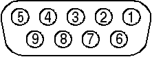
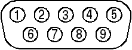

| DE-9
Female
Connector on AV-32 Companion Board |
|||||||||||||||||||||||||||||
|
DCE Pinout
|
 |
||||||||||||||||||||||||||||
| DE-9 Male cable Connector from PC | |||||||||||||||||||||||||||||
|
DTE Pinout
|
 |
||||||||||||||||||||||||||||